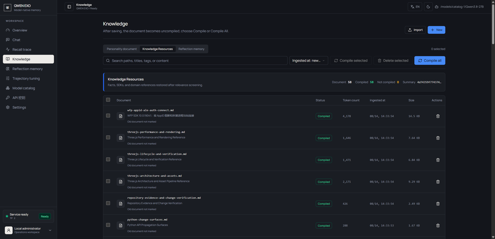
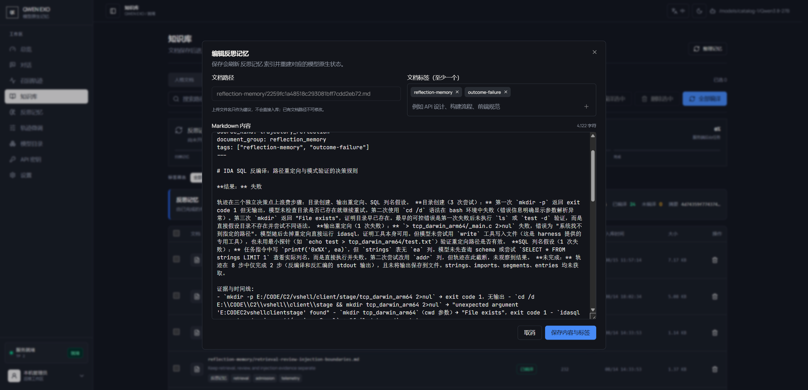
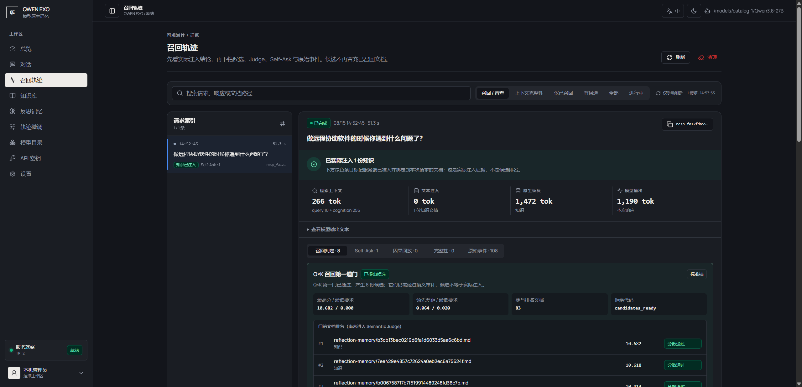

长任务做到一半，Halfway through a task, 模型把前面全忘了？your model forgets it all? 让它真正记住。Make it truly remember.
你的文档、团队的规范、上次踩过的坑——都值得被记住。QWEN-EXO 为 Qwen 提供长期记忆：按相关性召回知识，在空闲或上下文压缩后复盘真实轨迹，将通过校验的经验用于后续任务。写一份 Markdown 就是知识库，不需要微调。 Your docs, your team's rules, the pitfalls you already hit—all worth remembering. QWEN-EXO gives Qwen long-term memory: relevance-based knowledge recall and evidence-backed trajectory review after idle periods or context compaction, with validated lessons available to later tasks. A Markdown file is your knowledge base. No fine-tuning.
文档越攒越多，
模型却用不上。More docs piling up,
yet the model can't use them.
常见做法是把"可能相关"的文档一股脑贴进对话：贴少了怕漏，贴多了模型被淹没，每轮还要为这些重复的文字付出成本。QWEN-EXO 换了个思路——不是让模型每轮"重读"你的资料，而是让它"记住"你的资料。 The usual approach pastes "possibly relevant" documents into every chat: too few and you miss things, too many and the model drowns—and you pay for those repeated tokens every single turn. QWEN-EXO thinks differently—instead of making the model re-read your material each round, it makes the model remember it.
它知道该想什么It knows what to recall
不靠外部检索器猜关键词。模型根据当前任务，自己从记忆库里挑出几条"可能有用"的，而不是按字面相似度捞回一堆。No external retriever guessing keywords. The model itself picks the few memories that might help with the task at hand—no pile of literal text matches.
→不是相关就用Relevant isn't enough
挑出来的每条记忆还要过一道审查：真的适合当前任务才放行，不适合的拒绝——并且记录为什么拒绝。Every candidate then passes a review: admitted only if it truly fits the task, otherwise rejected—with the reason on record.
→记住，而不是贴出来Remembered, not pasted
通过审查的知识直接进入模型的注意力，原文不必复制进对话——上下文空间留给眼前的任务。Admitted knowledge goes straight into the model's attention; the original text never enters the chat. Context stays free for the task at hand.
团队文档，
终于有人读了。Your team docs
finally get read.
API 文档、项目规范、排障经验，平时躺在仓库和网盘里，问模型时它却一无所知。写成 Markdown 并编译进知识库后，模型可按相关性召回并审查。修改源文档后需编译或重建索引——不用重新训练，也不用每轮复制粘贴。 API docs, project rules, troubleshooting notes—they sit in repos and drives while the model knows nothing about them. Compile Markdown into the knowledge base for relevance-based recall and review. After editing source documents, compile or rebuild the index—no retraining or copy-pasting into every chat.
放进库里就行Just drop it in
写完 Markdown，启动或热更新即入库，没有训练流水线。Write Markdown, start or hot-update—no training pipeline.
库再大也不乱Big library, no mess
资料多不等于每个请求都要背着它们；只有真正相关的才被唤起。More material doesn't mean every request carries it; only what truly matters is recalled.
改了就算数Edits take effect
更新文档、重建索引，模型的能力跟着更新。Update the doc, rebuild the index, and the model's capability follows.

踩过的坑，
留下可复用的经验。Past pitfalls—
lessons worth recalling.
agent 最昂贵的错误是重复犯错。QWEN-EXO 在轨迹空闲或上下文压缩后复盘真实观察：哪里绕了弯路、哪一步有证据支持，提炼可复用经验。通过校验并发布的经验可在后续任务中召回；是否采用仍由语义审查决定。自动积累经验，不把一次复盘当成永不犯错的保证。 An agent's most expensive mistake is repeating one. QWEN-EXO reviews real observations after idle periods or context compaction, extracting reusable lessons from detours and supported actions. Validated, published lessons can be recalled in later tasks, subject to semantic review. Automatic experience accumulation—not a guarantee against future mistakes.
自动复盘Automatic review
服务端在后台分析轨迹；分析完成、经验准入和实际发布分别记录。Trajectories are reviewed in the background; analysis completion, eligibility, and publication are tracked separately.
审查通过才用Use after semantic review
相关经验先进入候选，再经语义审查；入库不等于每次都会召回或采用。Relevant lessons become candidates for semantic review; storage does not guarantee recall or use.
记错了能撤回Wrong lesson? Retract it
反思记录可查看、可在保留来源时重新分析；已发布文档可撤下。Inspect reflection records, re-analyze retained sources, or remove published documents.

它是谁、怎么做事、懂什么，
分开管。Who it is, how it works, what it knows—
managed separately.
把所有要求都写进一大段 system prompt，结果就是：换任务要重贴、改规范怕误伤、人格越聊越淡。QWEN-EXO 把不同性质的记忆分开存放：人格一直在，规范一直管，知识和经验按需想起——换任务不用重新交代它是谁。 Stuffing every requirement into one giant system prompt means re-pasting for every task, fearing every edit, and watching personality fade as the chat grows. QWEN-EXO stores each kind of memory separately: identity always present, policy always enforced, knowledge and lessons recalled on demand—a new task never means re-introducing who it is.
它为什么知道这个？
你能查。Why does it know that?
You can check.
记忆系统最大的风险是"悄悄记错"。QWEN-EXO 把每一次想起、拒绝、注入都留下记录：哪份资料被用了、为什么用、为什么不用，控制台里一目了然。"感觉模型变聪明了"不算数，看到证据才算。 The biggest risk of a memory system is quietly remembering wrong. QWEN-EXO logs every recall, rejection and injection: which document was used, why it was used, why another wasn't—all visible in the console. "The model feels smarter" doesn't count; evidence does.
记忆可以提醒，
但不能带节奏Memory can nudge,
never steer
你可以让相关经验在模型思考时"提个醒"，但幅度有限、范围可控、随时可关——旧经验不会因为出现得多就越放越大。You can let relevant experience "nudge" the model while it thinks—but bounded in strength, scoped in range, and switchable at any time. Old lessons never amplify just because they matched often.
- 先观察它会怎么选，再决定开不开watch its choices first, enable later
- 阈值、上限、范围、回退都可调thresholds, caps, scope, fallback—all tunable
- 每次提醒和拒绝都有记录every nudge and rejection is logged
跑到一半断了，
接着做Interrupted mid-task?
Pick up and continue
长思考、多轮工具调用最容易在边界处断掉。它分得清"在想什么""调用了什么""答了什么"，断了也能从可靠状态继续，而不是从头再来。Long reasoning and multi-round tool calls break at boundaries. It keeps thinking, tool calls and answers strictly separate, so an interrupted run resumes from reliable state instead of starting over.
- 想了一半的内容不会冒充最终答案half-finished thinking never poses as the final answer
- 不完整的响应有受控恢复路径controlled recovery for incomplete responses
- 上下文太长时服务端自动压缩server-side compaction when context runs long

看得见的数字，
不是感觉。Numbers you can check,
not vibes.
DeepSWE 的 GraphQL SWE 任务上，同一条任务在反思记忆的迭代中逐步收敛，第 18 轮达到 F2P 满分。这是单次任务轨迹的真实记录，不是“平均提升 xx%”的包装。 On DeepSWE's GraphQL SWE task, the same task converged over reflection-memory iterations, reaching a perfect F2P score at round 18. This is the real record of one task trajectory—not a packaged "average +xx%".
| 轮次Round | F2P | P2P | reward | 备注Note |
|---|---|---|---|---|
| r1 | 12/17 | 811/811 | 0 | 首轮first run |
| r2 | 3/17 | 810/811 | 0 | 回归regression |
| r4 | 14/17 | 811/811 | 0 | — |
| r8 | 10/17 | 811/811 | 0 | — |
| r11 | 16/17 | 811/811 | 0 | 最接近满分closest to perfect |
| r15 | 15/17 | 810/811 | 0 | P2P 回归regression |
| r17 | 16/17 | 811/811 | 0 | 差一个 DSL 字段one DSL field short |
| r18 | 17/17 | 811/811 | 1 | 满分 ✓perfect ✓ |
诚实边界：请求仍然有上下文上限；QK 检索会犯错，所以才有 Judge 和拒绝原因；反思记忆是外部记忆而非参数学习，效果依赖轨迹质量。实验功能（如 Context Integrity）默认关闭，需显式开启。 Honest limits: requests still have a context ceiling; QK retrieval can be wrong, which is exactly why the Judge and rejection reasons exist; reflection memory is external memory, not parameter learning, and its value depends on trajectory quality. Experimental features (e.g. Context Integrity) are off by default and must be enabled explicitly.
两条命令，
跑起来。Two commands
and it runs.
支持 macOS 和 Linux（Windows 请走 WSL）。CUDA 走 Docker，Apple Silicon 走原生 MLX，不需要 CUDA。 Runs on macOS and Linux (Windows via WSL). CUDA goes through Docker; Apple Silicon uses native MLX—no CUDA needed.
# 构建镜像，编排参考 docker/compose.yaml bash scripts/qwen_exo/build_image.sh # 双卡完整启动示例，按自己的机器改参数 bash scripts/qwen_exo/launch_js4090.sh
# 原生 MLX，不需要 Docker / CUDA bash scripts/qwen_exo/install_mlx.sh export QWEN_EXO_MODEL_PATH=/path/to/Qwen3.8-27B export QWEN_EXO_DATA_PATH=/path/to/qwen-exo-runtime bash scripts/qwen_exo/launch_mlx.sh
curl --no-buffer http://127.0.0.1:30000/v1/responses \ -H 'Content-Type: application/json' \ -d '{ "model": "duckgpt", "input": "解释当前服务的混合注意力状态如何恢复。", "stream": true, "max_output_tokens": 256 }'
# 控制台只监听 127.0.0.1，本地建隧道 ssh -N -L 30000:127.0.0.1:30000 <gpu-user>@<gpu-host> curl http://127.0.0.1:30000/qwen-exo/knowledge curl 'http://127.0.0.1:30000/qwen-exo/recall-trace?limit=10' curl 'http://127.0.0.1:30000/qwen-exo/telemetry?limit=100'